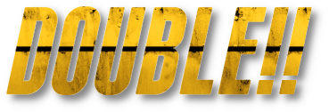
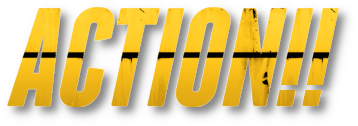
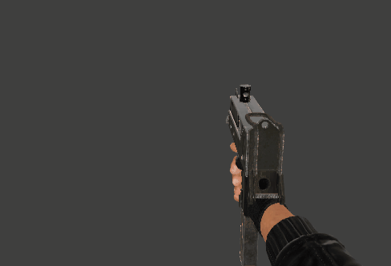
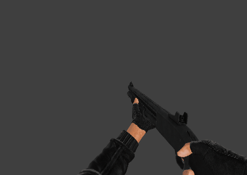

|  |  |
A sawnoff shotty that pumps out the rounds with high damage and high fire rate but has a shot pattern that looks like you threw sugar at a fan.
A tight underground bunker with a combination of close-in hallways and long open sight lines.
A Red Beret gone rogue due to a tragic and action-packed backstory that is like, really cool but you had to be there.
A mixed bag of challenges and grinds, our first batch of achievements is ready for nabbing.
Some tweaks to core timings and values create new meta games to give skilled players the edge, as well as a new particle effect that triggers when a players style bar is filled - telling surrounding players to watch out (or close in)
Before we get into the meat and spuds I want to give a huge hug and thank you to some key players from the DA and wider source modding community. Without these superstars we simply wouldn't be here today:
Off the top of my head I can think of three separate occasions over the past ten years when Eli has found me in the muck and mire of source engine modding, yanked me out of the sludge and put me back on track and smashing down goalposts. The man is a visionary, a genius and an all round legend. Anarchy Arcade is a source mod that does things with the source engine that Gaben himself would lose a tooth over. It's a VR virtual sandbox desktop thing for your games and videos and sharing and multiplayer and holy damn heck you gotta check this thing out. You da man Eli. You. Da. Man.
Out of nowhere, and on the steam of his own... um, kettle? Zero has been giving me some of the hottest tips and in depth lessons about the obscure ins and indecipherable outs of the source engine and the steam environment that I would have taken years to figure out. He went above and beyond for no reason other than that he's a stand up lad. Jabroni Brawl is a ludicrous and insane source mod that plays like a drunken sailor with a bazooka in a hurricane upside down in a fever dream. It's slated for release whenever and you should put it on your "gotta have it" list. Thanks Zero, you rock.
Tomy has been the only dude to incubate DA while the rest of us went off into the wild. With his constant bugfixes, tweaks and patches he has kept the candle lit in the DA community over the past six years with nothing more than a popsicle stick, a paperclip and sixty gallons of C4. Without Tomy keeping the faith I don't know what might have happened to DA. Future generations will sing songs in his name. You're a rockstar Tomy, take a bow.
Slikktic created an unofficial community discord for Double Action which we recently found out about and TOOK FROM HIM BY FORCE. Nah jks, he's still the main mod man, luv ya Slix thanks for the channel! (find it here: https://discord.gg/khatdfJUW3)
Bomber is a recent redux on an old model that never saw the light of day. She sprung from some of the original concept art for DA back in 2015, but was put on ice and deprioritized until right about 6 months ago when she tore a hole in my bedroom wall, chokeslammed me into my desk chair and shot me in the face. I haven't slept since then please send help.
DoubleTrouble featured early on in the life of DA and was an old favourite. It has been spruced up and wiped down and is ready for mayhem. With a combination of tight corners and long hallways the map facilitates a range of playstyles, weapons, and skill combinations in close quarters.
Most of the achievements are hidden but since you're here reading this right now I'm going to lay them all out for you:
In a whirlwind of collaboration with some of our oldest and some of our newest boogalooers, the Stakeout went from ideation to creation in a very short duration. Much thanks to the enthusiastic efforts of EnlargedQuack, providing the highpoly and materials, Tom "Rez" Wright of http://tomwrightsound.com/ for dropping the phat booms, and to LB "The man of action/homme+action" for his new and awesome and super fun to use hands rig that we used to animate this little beauty. Here it is receiving a nice pat from that new hands rig:
And speaking of our new hands rig, LB "The man of action/homme+action" also resurrected some files from the old forums and they have, at long last, made it into the official build. A brand new model and new animations for the Mac Daddy and a re-hand and re-animation of the Persuader. Can we get a round of applause for the frenchmans efforts please!
|  |  |
Players now explode with a new particle effect when their style meter fills up, health regen has been boostd and tweaked, the ratrace rules have been modified to make it less of a chore to finish a race, weapons have been ever so slightly modified, brawl timings and powers have been turned into weapon script variables meaning different weapons now have different brawl capabilities, da_rooftops has been updated and, and, like, other things and hngggg omg just PLAY IT ALREADY!!
In case you didn't know, Double Action is an open source repository on GitHub. This means literally ANYONE can download our code, build the game and contribute with great justice. If you are a modder (or want to be a modder) we will be extremely happy to help get you up and running. The git repo is right here: https://github.com/BSVino/DoubleAction and we hang out in the DA discord these days, right here: https://discord.gg/khatdfJUW3. I'm @Stormy#8620 - Come @ me bro!